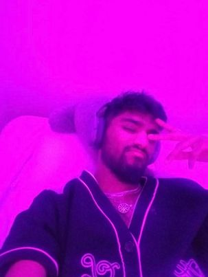
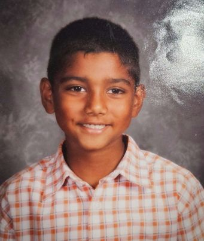
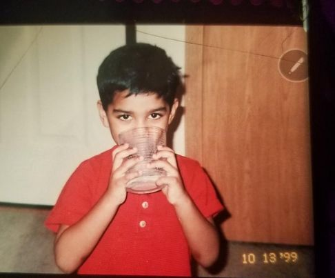
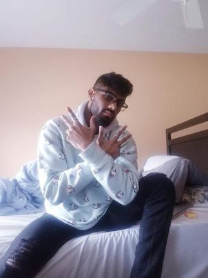
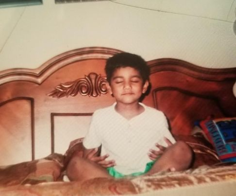
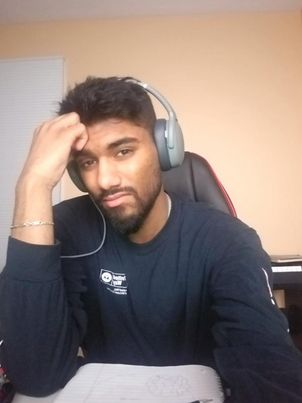
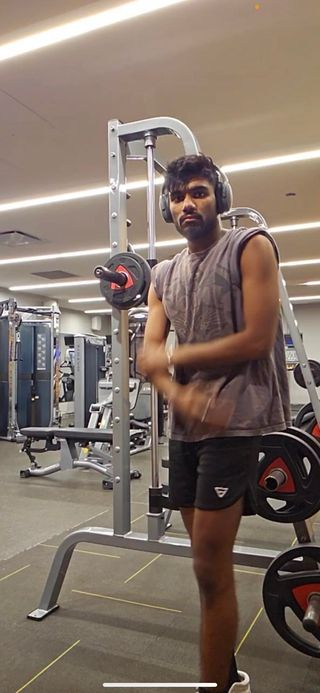
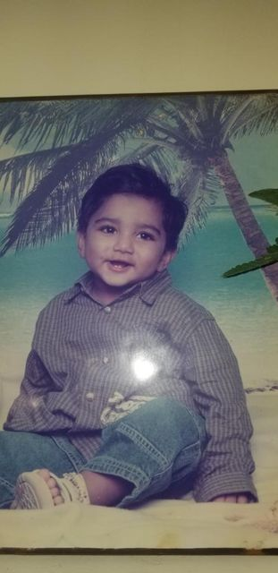
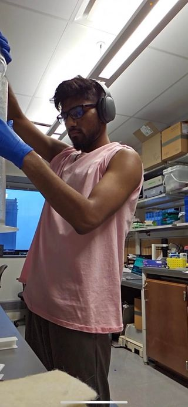

Picture Gallery ☺️
        
Browse through this whenever you get tired, stressed, or upset. Or at any other point tbh. It's not as good as yours but I tried. If med school doesn't work, just move to the Silicon Valley and work in tech with me. Doctor or not,my mom would still approve of you, we'd be making the big bucks, and we'd get to spend our weekends together sooo it may not be the worst idea hm. Okay, I'm getting side-tracked but really, it's been an honor and privilege getting to know you as a person. Thank you for teaching me so much – whether it be about the Limbic Loop, how to cut paneer properly, more rap music, how to pronounce "caveat" and so many other words, how to remain calm and collected while studying for finals, and most importantly, how to not let your past stop you from being great and wanting to be even greater. I continue to be inspired by you every single day, and I cannot wait to do all the little things we've talked about and visualized next month. I more than like you :)
Even though we forget to fill this out at times, it was the first 'us' idea we had (credit to you of course). I hope we'll be better about maintaining it but just the fact that it exists and now has a record of our first conversation means a lot to me. We really should make a Google Drive folder that has links to all of these links so we can share it with Saiya and Syre in the future!
For HimI made this the first day you told me about some songs that you liked and wanted me to listen to. Then, I added more when I asked for your help to choose a song for my beach story. Ever since then, I've been adding songs that you queue when we're listening to music together or songs I find out that you like. I have this so I can expand my music taste and learn to love yours, but I hope someday we can make a collaborative playlist that has songs that both of us looove. This will be the roadtrip playlist, I promise.
Indian playlistThis is nostalgiac for a myriad of other reasons. Before we became "us", I shared some of these songs with you and unknowingly, you began to love them. I hope they continue to remind you of me and what we can have because you know these Bollywood movies really up the standards and expectations. I'd like you to add some Tamil/Urdu songs to it too, so I can learn the languages a bit more that way :)
UDYI won't put you on any pre-planned loyalty tests like this coz I know the episode would actually end in 4 seconds if I did that. Maybe we can just stick to watching them happen to other couples for now.
ArthurIt meant so much to me when you said you'd watch Arthur with me. Even though it's an animated PBS Show, it has always been something that I loved watching as a kid and even now. I have too many memories of it and I know I've learnt a lot from it, so sharing that important piece of who I am today with you has been so special. Thank you for falling in love with it too. I can't wait to play it for Saiya and Syre while we feed them so that they grow up with the values and morals that were instilled in me because of the show. I know you're probably thinking "it's not that deep," but I can't wait to do with you and them. On a lighter note, I think it would be pretty funny to drink and watch Arthur so we can make fun of all of the characters and their savage, shady disses.
CoHoI put this here so we can maybe try to read more of her books together. After all, we met because I was trying to buy "November 9th" sooo I think it's only right that we do that. Also we need to read "Twice Shy" and hopefully a lot of other romance novels. I like having this lil book club with you because I've never had it with anybody else nor have I met a guy who likes to read as much as I do. You're really everything I could've wished for, fr.
ChessPrettyyyy self-explanatory. We'll be using it to play more online games, blind-folded and normal. Honestly, we should totes play some bughouse with other people that play chess. I think that would be fun. Just please don't roast me if I blunder lmao.
CutI know how much you love watching the jank ass people on this show doing jank ass things so I decided to put it here. Honestly, watching these videos has always been weird to me but I like watching them with you because roasting people and making comments about what they look like, are wearing, etc etc is always hella fun. When he's mean to everyone else but nice to me >>> (idk if this makes me a bad person oops)
Me Before YouI'm not sure if I told you or not, but I watched this on the plane to India because you had told me that you really really liked it during one of our first few conversations. It had been a while since I saw it and so I remember I made a mental note to try to watch it on the flight if it was there and luckily for me, it was. A mf really thought about you for 18 hours straight on the flight wishing she had service so she could text you. She didn't. When the plane landed though, you was the first person she texted saying that she was now in Dubai and then proceeded to wait for a couple of hours for your reply. Gosh, it's probably bad that I don't remember a whole lot from that whole trip except for my conversations with you and how hard I was crushing.
NBA MatchesAs much as I complain about being a couch potato, playing basketball with you sounds like a whole lot of fun. It means I get to watch you be a complete show-off/try-hard, but it also means I get to make you happy because I know that me playing with you and just being there is something that you've always wanted. Imma do that for you just like how I catch myself wanting to be be more "in-the-loop" (or should I say "in-the-hoop" hahaha) about anything related to basketball.
We Belong on HereI'm not gonna say much about this one. I think you just need to click on the link and scroll through it to know why I put it on here.
Click on the bullets below! We might need to bookmark some of these so we can refer to them later ;)
✈️ Day We Met: December 24, 2022
📲 Rekindling: February 25, 2023
🏠 Trip One: June 23, 2023 to July 2, 2023
🤞🏽 Trip Two: tentative but hopefully end of summer!